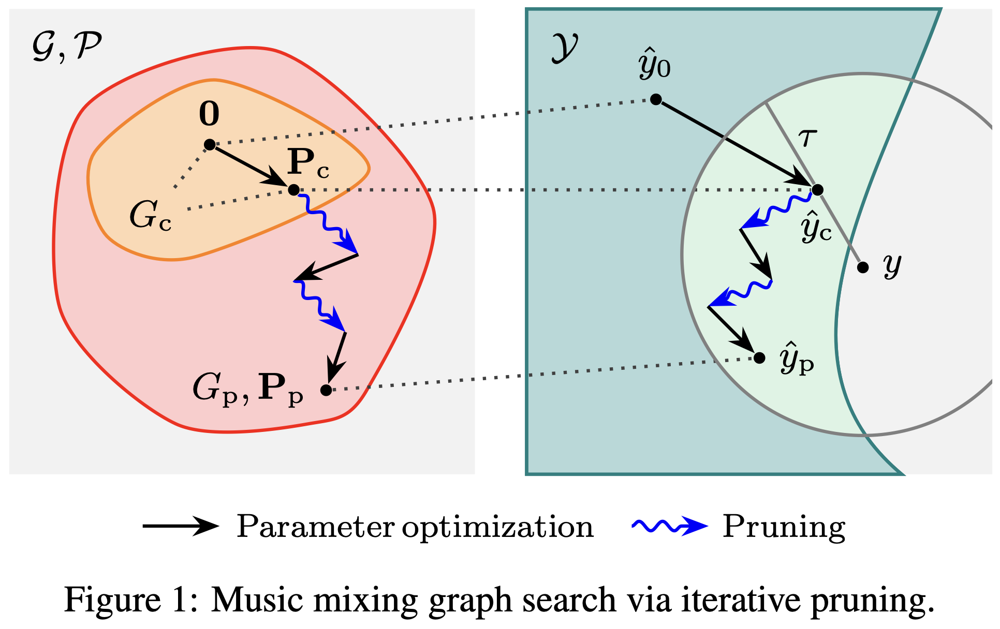

Searching For Music Mixing Graphs: A Pruning Approach
Sungho Lee1*,
Marco A. Martínez-Ramírez2,
Wei-Hsiang Liao2,
Stefan Uhlich3,
Giorgio Fabbro3,
Kyogu Lee1, and
Yuki Mitsufuji2,4 1Seoul National University,
2Sony AI,
3Sony Europe B.V,
4Sony Group Corporation
*Work done during an internship at Sony AI.
Abstract
Music mixing is compositional --- experts combine multiple audio processors to achieve a cohesive mix from dry source tracks. We propose a method to reverse engineer this process from the input and output audio.
First, we create a mixing console that applies all available processors to every chain. Then, after the initial console parameter optimization, we alternate between removing redundant processors and fine-tuning.
We achieve this through differentiable implementation of both processors and pruning.
Consequently, we find a sparse mixing graph that achieves nearly identical matching quality of the full mixing console.
We apply this procedure to dry-mix pairs from various datasets and collect graphs that also can be used to train neural networks for music mixing applications.

Music mixing graph search via iterative pruning.
We start from a mixing console $G_\mathrm{c}$ and optimize its parameters $\mathbf{P}_\mathrm{c}$.
Then, we alternate between pruning and fine-tuning stages,
obtaining a sparse graph $G_\mathrm{p}$ and its parameters $\mathbf{P}_\mathrm{p}$ that does not degrade the match qualiy of the
mixing console up to a tolerance threshold $\tau$.
Finding a sparse graph $G_\mathrm{p}$ from a differentiable mixing console $G_\mathrm{c}$. i: input, o: output, m: mix, e: equalizer, c: compressor, n: noisegate, s: stereo imager, g: gain/panning, d: multitap delay, and r: reverb.